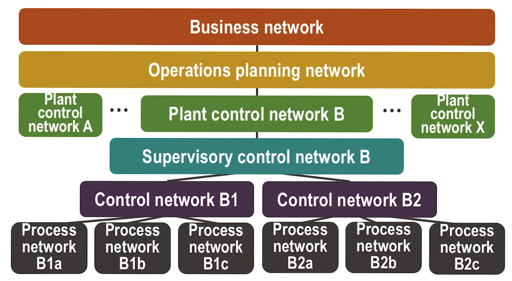
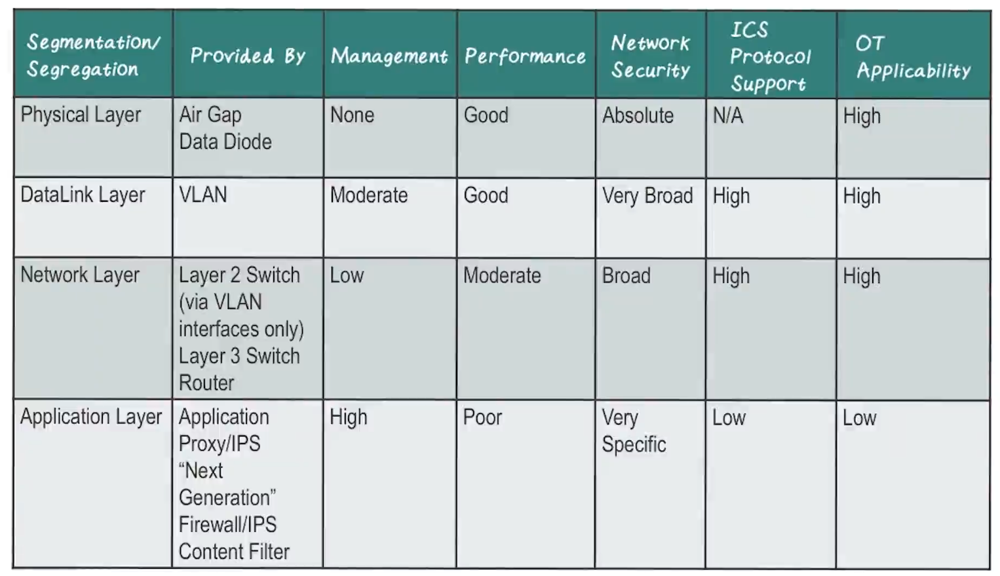
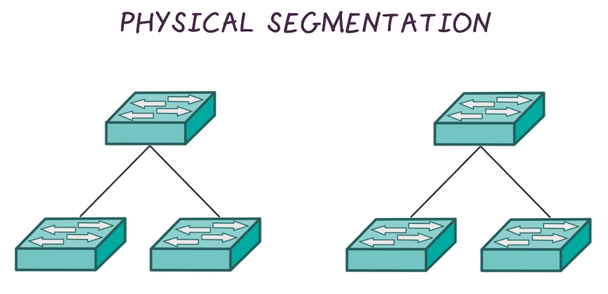
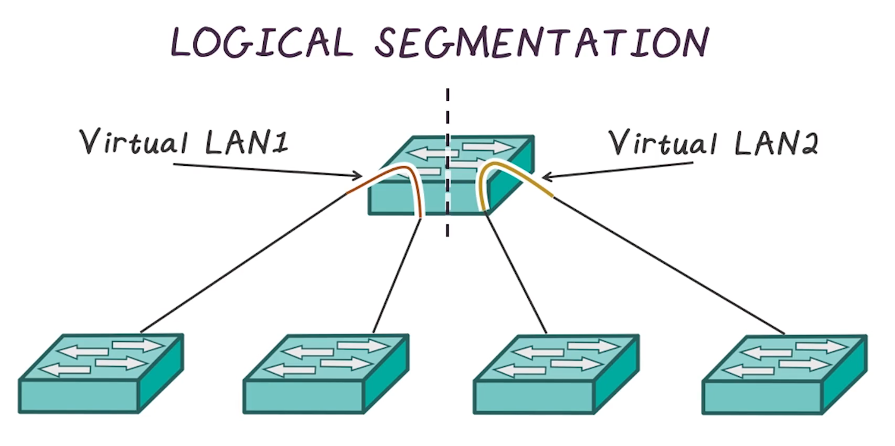
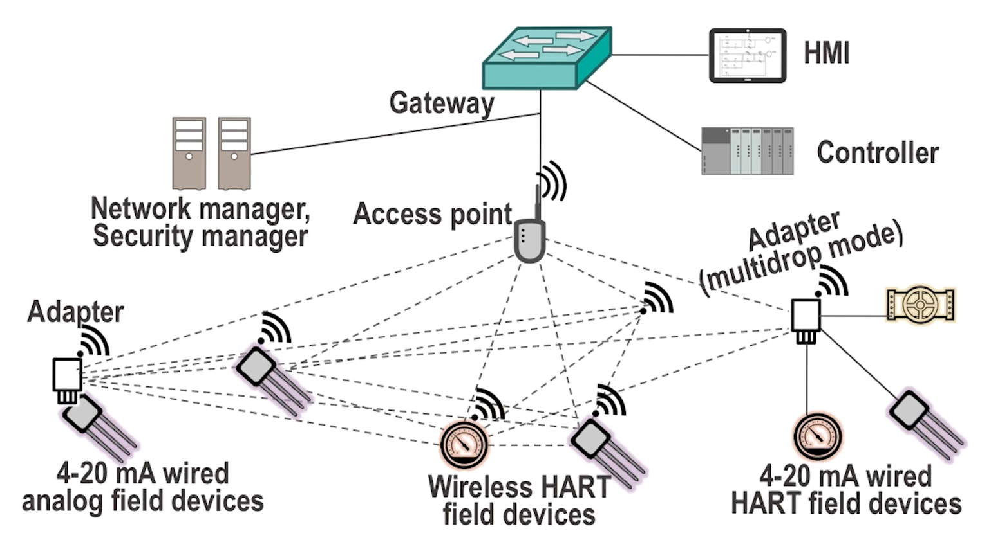

ICPSS Lecture Notes - Lesson 8 - Industrial Network Design and Architecture
Industrial Network Design and Architecture
Differences in Network Architectures by Function
- Industrial Network == any network that supports the interconnectivity of and communication between devices that make up or support an ICS
- Can be LAN or WAN depending on type of ICS
- Historically discussions about network architecture have mostly been about business networks
- Business networks are:
- highly interconnected
- have various wireless connectivity options
- extremely dynamic in nature
- BYOD exacerbates this
- So does remote access, such as VPN
- Lots of internet-facing services
- Business network security focuses on the classic CIA, but availability is usually lowest priority out of those 3
- Structurally, industrial networks are often similar, but availability is paramount
- ICS is usually hard-realtime, bandwidth and latency are critical
- This dictates which topologies are appropriate (e.g. ring or mesh) and may even call for purpose-built networking hardware
- Redundandancy is a path to availability. One way to accomplish this is with multiple ethernet connections
- Redundancy may necessitate different routing or switching protocols, to enable efficiency in the presence of redundant network paths
- Lower-level protocols in Industrial networks are often more specialiazed
- e.g. Foundation fieldbus protocol
Network Topologies
- Industrial networks are usually distributed in nature, and vary considerably
- As opposed to business networks, where IP and ethernet dominate
- Business networks are often implemented in many different topologies, such as mesh or star topologies
- Industrial networks will also often use bus or ring topologies
- Have fallen out of favor for business networks
- Ring topology supports high redundancy needed in industrial networks
- Bus topology represents shared message transmission domain
- Network topology will have strong impacts on security and reliability, as well as ability to segment the network properly
Network Segmentation

- Many easons for segmenting industrial networks:
- Top 2 are:
- Performance
- Security
- Top 2 are:
- Segmentation usually done at layer 3 of protocol stack (network layer)
- Can also be at layer 2 via VLAN
- Hierarchical network segmentation design means that communication between two networks may require traversal across multiple
- e.g. in above picture going from Process Network B1a to Process Network B2c involves:
- Process Network B1a -> Control Network B1 -> Supervisory Control Netwokr B -> Control Network B2 -> Process Network B2c
- e.g. in above picture going from Process Network B1a to Process Network B2c involves:
Types of Communication Flow Control
- Absolute
- No communication is allowed (i.e. all traffic is blocked in both directions)
- Conditional
- Only explicitly defined traffic is allowed (e.g. via Access Control Lists, filters, etc)
- Bidirectional
- Traffic is allowed in both directions.
- Conditions may be enforced in both directions
- Unidirectional
- Traffic is only allowed in one direction (e.g. via a data diaode or unidirectional gateway)
Higher Layer Segmentation

- While network segmentation is usually done at Layer 3 ( via subnets) or Layer 2 (via VLANs), it can also be done at any layer in the stack
- This is called protocol filtering, or network whitelisting
- It defines the network behaviors that are allowed
- Defense in depth!
- Note, however, that as network segmentation increases, the overall end-to-end latency increases
Physical Segmentation vs Logical Segmentation

- Refers to the use of two separate physical network devices to perform the isolation between networks
- The two networks show above are completely airgapped

- Refers to the use of logical functions within the same network device to achive isolation between networks
- In this example two different vlans are used in a single switch in a trunk connection to separate these networks
- In industrial networks, physical segmentation is still very widely used.
- Physical layer controls are also popular in highly critical areas, due to frequent use of multicast for low-latency communication
Network Services
- e.g. identity, access management, or domain services
- Services are usually already in place for business network, but extending those same servers to the industrial network introduces risk
- Thus, separate servers for those services should be maintained for those networks
- This decouples risk between the zones
- In general, abide by the principle of least route, which states that in purpose-built networks, the nodes should only be given the connectivity needed to perform its function
Wireless Networks

- Wireless networks may be used at any point within an industrial network
- Wireless networks are (obviously) more difficult to physically contain
- Any device with an appropriate transceiver that is within range can receive and send wireless signals. No cabling in necessary.
- Conduct thorough radio frequency surveys to monitor this risk.
- The myriad of use cases for wireless in industrial networks has caused a proliferation of industrial wireless protocols
- One such, wireless HART, is shown in the implementation above
- A common use case (again, obviously) is to support connectivity for remote or physically difficult devices such as field devices
- This makes power a consideration. Often power is extracted from the same line used for communication (e.g. power over ethernet)
- This means power availability (such as battery life) directly impacts the functioning of the relevant process. Dead batteries on your sensors might mean a real bad time
Remote Access
- Often necessary, sometimes to support vendors or similar
- All access points are an attack vector, and should only be used when necessary
- Best practices are:
- Minimze attack vectors
- Only provide one path for remote access
- Principles of least privilege
- Only allow remote access to targeted resources
- Consider further segmentation
- In service of least privilege.
- Wall off remotely accessible systems from others
- Application control
- No direct access
- To critical or important systems
- Strong security policy
- Should be equal to or better than the policy in place for on-site access
- Avoid remote storage of credentials
- Ability to terminate connection locally
- Log everything
- Minimze attack vectors
Network Performance
- Four components of network performance are:
- Bandwidth
- Throughput
- Latency
- Jitter
Latency and Jitter
- Latency is the amount of time it takes for a packet to traverse a network from its source to its destination
- Usually represented as a round trip time (RTT)
- When traversing segmented networks, as shown above, each network hop will add latency
- The deeper into a packet a device must read to make a routing decision, the more latency will be added by the hop
- E.g. a layer 2 switch will add less latency than a layer 3 router, which will in turn add less latency than an application-layer firewall
- The deeper into a packet a device must read to make a routing decision, the more latency will be added by the hop
- Jitter is the variability in latency over time, as large amounts of data are transmitted across a network
- Can often be more disruptive to real-time communication across a network than latency alone
- If it is severe enough, timing will be lost. This is unacceptable in the context of sensors, for example
Bandwidth and Throughput
- Bandwidth refers to the total amount of data that can be transmitted from one point to another in a given period of time
- Often measured in megabits per second or gigabits per second
- Depending on the type of network there may be contention
- Not usually a concern in industrial networks, as most industrial uses require very little bandwidth to operate
- Obviously some exceptions, especially newer devices
- However, industrial network designs must accomodate bursts of event-related data that can occur during disturbances
- Throughput refers to the volume of data that can flow through a network
- Impacted by a variety of factors, such as medium, interference, device capabilities, selected protocols, etc.
- Commonly measured in packets per second
- The correlation between bandwidth and throughput is dependent on many things, including size of packets and the protocols used
- A device that can transfer data at the full capability of the network is said to support “line rate throughput”
Type/Class/Quality of Service
- When you have multiple nodes, contention can cause unwanted delays on the network
- Quality of Service (QoS) refers to the ability to differentiate and prioritize some traffic over other traffic
- e.g. prioritizing real time communication over others
- Type of Service (Layer 3) and Class of Service (Layer 2) provide the mechanisms for identifying the types of traffic, and are used by QoS to shape traffic
- Every network device a packet encounters must process that traffic, and cause varying degrees of latency
- though modern devices are very fast and usually do not add much, though it can add up especially with higher-layer logic
Safety Instrumented Systems (SIS)
- Many ICS systems and Components are monitored by SIS
- SIS consist of many of the same types of devices as normal ICS
- SIS are designed to identify unsafe state, and put the system into a safe state
- Designed for maximum reliability and include diagnostics and redundancy.
- SIS must be available
- SIS may be integrated or hardwired in
- Co-existing SIS and OT devices introduces security risk
- Important comply with the principle of least privilege
- Important to consider failures and unsafe states
Wide Area Connectivity (WAN)
- Some ICS such as the power grid are connected over WAN
- substations, pipelines, oil rigs, etc
- Can be implemented over public infrastructure, or leased capabilities
- May be satelite, run wires, or over airwaves
- Must be given the same security considerations as all networks we’ve already discussed
- Actually more, due to increased attack surface from physical accessibility
- Smart grid distributed PMUs are given as example, requiring GPS connectivity